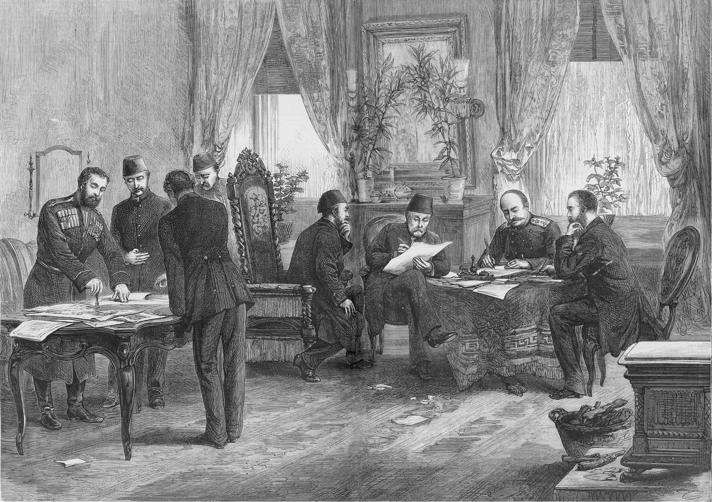
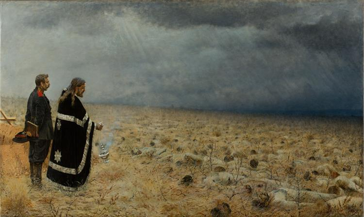

Pan-Slavism and the Russo-Turkish War

The Russo-Turkish War (1877–1878) was a conflict between the Russian and Ottoman Empires in which Russia intervened on behalf of the Orthodox Christian Slavs living unhappily under Ottoman rule. Two enabling conditions explain the Russian Empire’s decision to enter the war in the Balkans: the first was popular Russian sympathy for Orthodox Christians under foreign oppression. The mistreatment of the Balkan Slavs by their Turkish rulers had concerned Russian society since the Crimean War (1853–1856), but it was not until the 1870s that Pan-Slavism — the idea of a shared ethnic, linguistic, and religious identity among Slavic peoples across Europe and Asia — surged in public discourse and galvanized popular support for Russian intervention in the Balkans. As Kati Parppei recounts in her article on the subject, Pan-Slavic ideas circulated via newspaper articles and lubok booklets, illustrations of current events accompanied by some explanatory text. These popular publications reached a broad audience of ordinary Russians and powerfully communicated several narratives that worked to legitimize the war: that the conflict was a continuation of the ancient fight of righteous Christianity against its enemy, Islam, and that because Russians shared Slavic ancestry and Orthodox Christianity with the Serbians, Montenegrins, Bulgarians, and Czechs, it was the country’s duty to protect its vulnerable kin. These narratives are deceptively simplistic and propagandistic, and they evoked powerful resentments and allegiances. Most Russians felt that they had been fighting off Muslim threats since the 1380 Battle of Kulikovo fought against the Tatars. Furthermore, in popular media, Turkish Muslims were portrayed as ruthless, barbaric, and lazy, while the Orthodox Christians under their rule were portrayed as innocent, righteous, and hard-working. Influenced by these publications and other popular discourses, Russian society enthusiastically adopted the Pan-Slavic imperative to protect the Balkan Slavs from their Ottoman oppressors. The second enabling condition for the war was the escalating conflict in the region. In 1875, there were anti-Ottoman uprisings in Bosnia and Herzegovina, and later in 1876, in Bulgaria. These uprisings were portrayed in the Russian and European media as righteous opposition to Ottoman cruelty and mistreatment (featuring stories, for example, of Christian Slavs being forced to convert to Islam at threat of torture and death by the hands of the notorious Ottoman mercenaries, the Bashibazouks). When Serbia and Montenegro joined the struggle against the Ottomans in 1876, Russia followed shortly after. Although the imperial government was initially reluctant to spend on another costly war, the Tsar capitulated to public pressure and declared war on the Ottomans in April 1877. After ten months of bloody warfare, Russia prevailed, and in the Treaty of San Stefano (March 1878) the Ottoman Empire granted independence to the contested nations (though these territorial concessions proved short-lived).
Tolstoy wrote the eighth part of Anna Karenina in the midst of the war, and his strong opposition to Pan-Slavism and the Russo-Turkish War is evident from his personal correspondences and his cynical treatment of the Slavonic Cause in the novel. For instance, in a letter to Afanasy Fet and Nikolay Strakhov, he describes the war as disturbing, and he dismisses the motivations of prominent Slavophiles like Anna Aksakova as “meagre vanity and false sympathy” (Kuzmic 61). Tolstoy expresses these convictions in the novel’s eighth part, which depicts the volunteer movement and public discourse surrounding the war. In her essay on the role of the Russo-Turkish War in Anna Karenina, scholar Barbara Lonnqvist convincingly argues that Tolstoy distributes his views on the war across the novel’s characters. The protagonist that most accurately represents Tolstoy’s viewpoint is Levin, who opposes the war because he feels that Russia should not intervene in a conflict that has nothing to do with its own people. Levin, like Tolstoy, views the Balkans under Ottoman rule as strangers, not his Slavic brothers. Prince Shcherbatsky echoes this position; feeling alienated by the Slavophilia around him, he confesses with relief, “But I calmed down when I came here and saw that there are other people besides me [Levin] who are only interested in Russia, and not in their brother Slavs” (Tolstoy 810). On the other side of the debate, those who support the war argue that Pan-Slavic sympathy is the authentic will of the Russian people. This view is represented by Koznyshev, but the credibility of his opinion is undermined by what the reader already knows about his character. Throughout the novel, Koznyshev is known to think in generalities and to ignore details that contradict his ideals. He imagines the many men who volunteered to fight in the Russo-Turkish war to be the “best representatives of the people” and motivated by “the expression of human, Christian feeling” (Tolstoy 810–811). Yet, Koznyshev has little first-hand knowledge of them. At the train station, he makes no effort to get to know the volunteers boarding the train for Serbia, unlike his friend Katavasov. Katavasov enters the second-class carriage and meets three volunteers that contradict Koznyshev's “general type”: a drunkard, a retired officer, and a cadet who failed his artillery exam (Tolstoy 779). The volunteers are aimless individuals with nothing left to lose, not the best men Russia has to offer. Indeed, even Vronsky (who has boarded the same train) has only volunteered to join the war effort out of immense grief over Anna and a desire to self-annihilate. Furthermore, it is doubtful that characters like Koznyshev and other educated Russians who support the war feel genuine sympathy with the Balkan Slavs, and are not just attaching themselves to the newest fashionable cause. Koznyshev only embraces Pan-Slavism after his book’s critical failure; his commitment to the war may be nothing more than an attempt to regain relevance as a public intellectual. Lydia Ivanovna’s Slavophilia is also suspect, as she is known to cycle through love interests and philanthropic causes without genuine conviction or long-term commitment. In this light, Tolstoy seems to be arguing that Pan-Slavism, like many other political agitations, is merely the temporary infatuation of individuals who are otherwise dissatisfied with their lives. Levin, who has finally found bliss within his small family, has no interest in protecting the Balkan Slavs; he is only concerned with those immediately around him. As scholar Tatiana Kuzmic argues, the analogy between family and empire offers an instructive reading of Tolstoy’s general philosophy: a meaningful life requires that you know “who one’s people are and how to recognize them,” and to live only for these people, as Levin does (Kuzmic 62). It is a mistake to overextend one’s concern to outsiders, as a country does in needless foreign intervention, or as a spouse does in an adulterous affair. By representing Pan-Slavism and the Russo-Turkish War in the final part, Tolstoy counsels the reader against the personal and political romanticism that inevitably leads to a surplus of affection for the wrong person or cause.
Works Cited
- Gerasimov, Ilya, et al. A New Imperial History of Northern Eurasia, 1700–1918. Vol. 2. Bloomsbury Academic, 2025, pp. 186–191.
- Kuzmic, Tatiana. "'Serbia—Vronsky's Last Love': Reading Anna Karenina in the Context of Empire." Toronto Slavic Quarterly, vol. 43, Jan. 2013, pp. 40–66.
- Lonnqvist, Barbara. "The Role of the Serbian War in Anna Karenina." Tolstoy Studies Journal, vol. 17, no. 1, Jan. 2005, pp. 35–42.
- Parppei, K. “‘This Battle Started Long Before Our Days …’ The Historical and Political Context of the Russo-Turkish War in Russian Popular Publications, 1877–78.” Nationalities Papers, vol. 49, no. 1, 2021, pp. 162–179, https://doi.org/10.1017/nps.2019.117